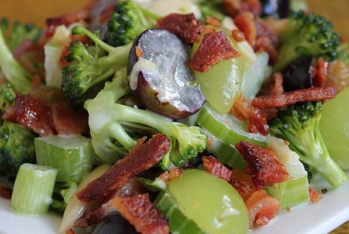

Spring Salad

Description
Fry chicken, turning frequently, until golden brown and juices run clear, 15 to 20 minutes.
Ingredients
- 12 slices bacon
- 2 heads fresh broccoli, florets only
- 1 cup chopped celery
- 1 cup chopped celery
- 1 cup seedless green grapes
- 1 cup seedless red grapes
- ½ cup raisins
- ½ cup blanched slivered almonds
- 1 cup mayonnaise
- 1 tablespoon white wine vinegar
- ¼ cup white sugar
Directions
- Place bacon in a large, deep skillet. Cook over medium high heat until evenly brown.
Drain, crumble and set aside.
-
In a large salad bowl, toss together the bacon, broccoli, celery, green onions,
green grapes, red grapes, raisins and almonds.
-
Whisk together the mayonnaise, vinegar and sugar. Pour dressing over salad and toss to coat.
Refrigerate until ready to serve.
Original Source
Recipe Link